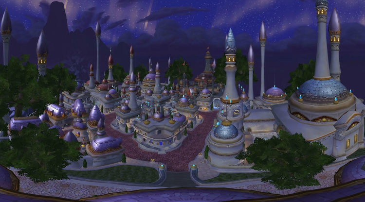

back
The Great City of Manastoria

The Great City of Manastoria is part of the Kingdom of Eulice. The city is beautiful in term of architecture and people live in it happily. The most important feature of Manastoria is the importance of magic in the city. Most Human cities are very light in term of magic, but this cities breathes of it. The city has been built on an ancient powerful mana source that powers most of the city, it has one of the best magical academy and even the stores are filled with magical weapon and armor. It is a great place to visit for an adventurer.